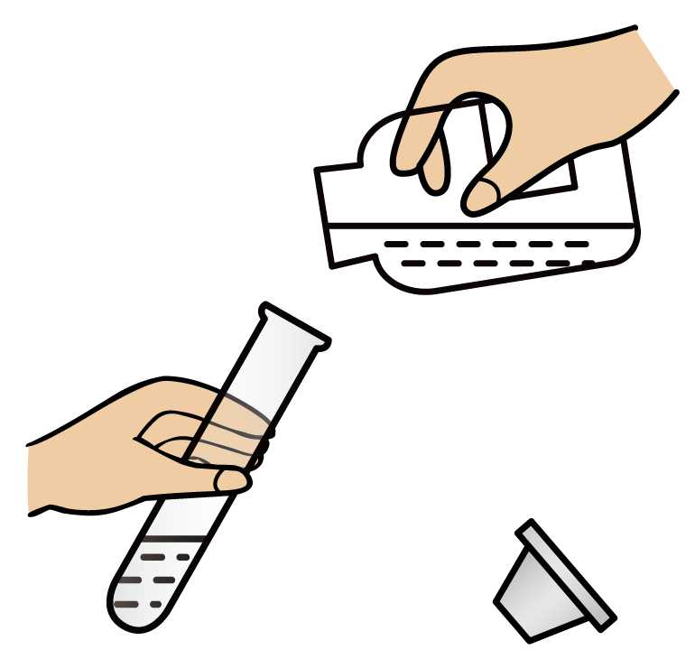
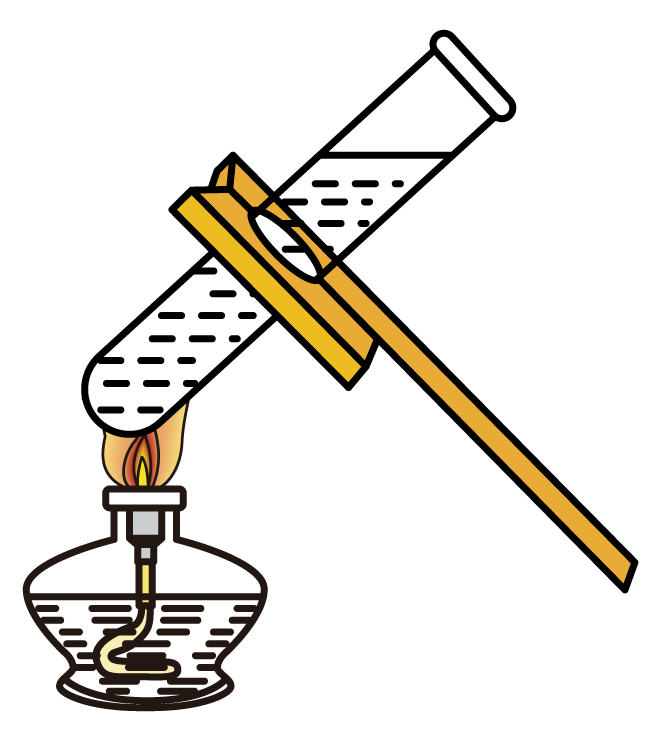
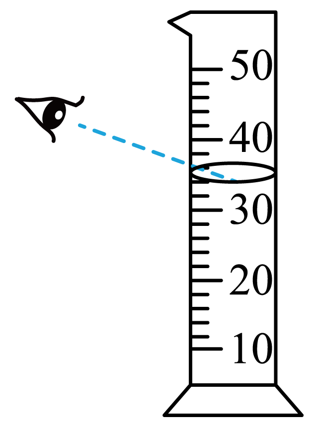
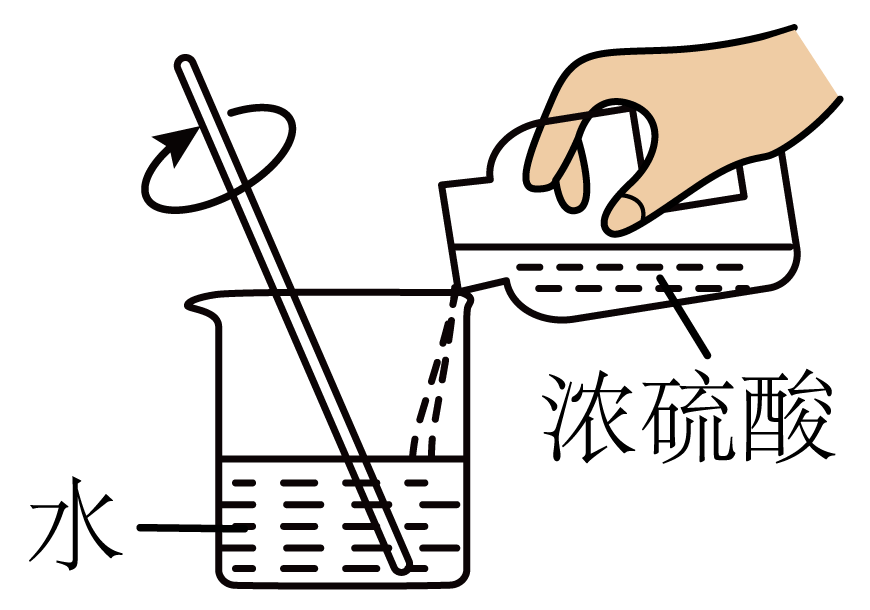
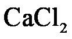
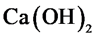

2024年北京市中考化学真题 · 选择题 第11、12、13、14、15题
11. 制作嫦娥六号月背展示国旗的原材料是玄武岩。玄武岩的组成元素有硅、铝、铁、钙等，其中属于非金属元素的是
A. 硅B. 铝C. 铁D. 钙
12. 下列操作正确的是
A. 倾倒液体

B. 加热液体
C. 读取液体体积

D. 稀释浓硫酸
13. 下列关于物质用途的描述不正确的是
A.  用于食品防腐B. NaCl用作调味品C. 干冰用于人工降雨D.
用于食品防腐B. NaCl用作调味品C. 干冰用于人工降雨D.  用作保护气
用作保护气
二十四节气蕴含丰富的文化内涵，反映了我国劳动人民的智慧。
14. 春分“竖蛋”。蛋壳的主要成分是碳酸钙，其化学式为
A.

B. CaOC. D. 
15. 清明放风筝。下列与风筝制作、放飞相关的部件中，用到金属材料的是
A. 竹质骨架B. 纸质风筝面C. 棉质捆扎线D. 不锈钢手握轮